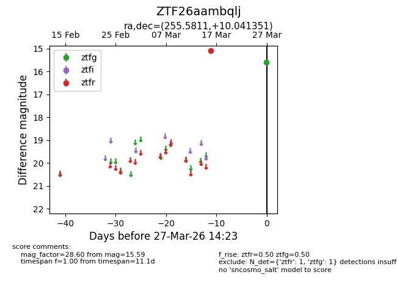
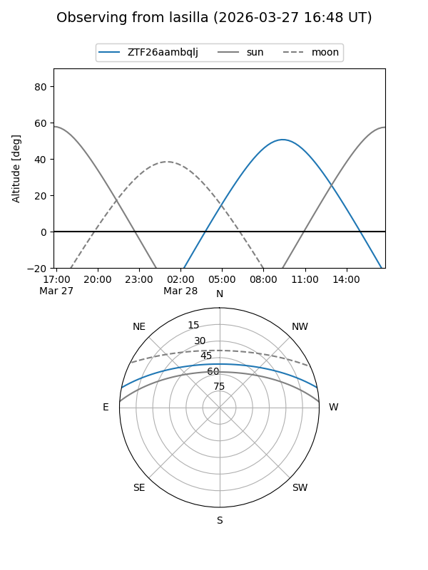
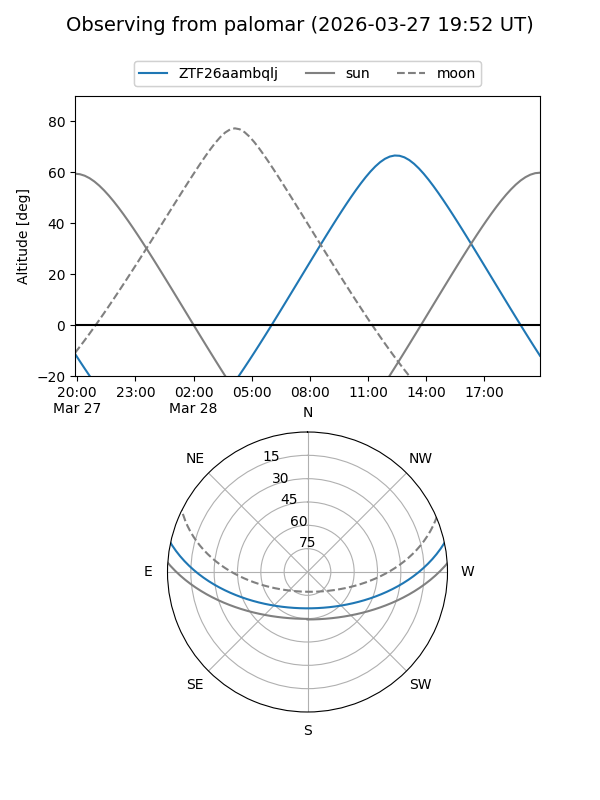

ZTF26aambqlj
Target ZTF26aambqlj at 2026-03-27 14:25
Aliases and brokers:
FINK: link
Lasair: link
ALeRCE: link
alt names
ZTF26aambqlj (ztf,fink_ztf)
Coordinates:
equatorial (ra, dec) = 255.5811,+10.04135
equatorial (HMS+DMS) = 17:02:19.45,+10:02:28.87
galactic (l, b) = (29.6226,+28.76063)
Flags:
Photometry:
last ztfg=15.59, ztfr=15.07
1 ztfg, 1 ztfr detections
Lightcurve

Visibility


Additional plots